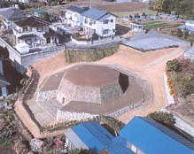

| 見たい項目をクリックして下さい | |||||||||
|
| 会員からの投稿（詳細-１５） |
| 三津屋古墳と耳飾り館見学記 |
|
|
実施日 ２００３年（平成１５）１０月２１日（土） |
 | |
| 航空写真から |
| 当日は幸いにも天気に恵まれ、坪井さんと私（尾田）の車に分乗して一路環八道路から関越自動車道を北上すること約２時間、前橋インタ−を経て目指す吉岡町の三津屋八角形古復原古墳を見て、その後約５ｋｍ西の榛東村耳飾り館に到着したのがすでに昼過ぎ。一行の心配していた昼食は近くの名物そば処で舌鼓を打ち、腹拵えを済ませていよいよ見学となる。耳に穴を穿ち、なんと直径９センチもの巨大耳飾りを嵌め込んだ女性の奇習に一驚したあとで、榛東村村営しんとう温泉ふれあい館で一汗も二汗も流し、ほのぼの気分で午後８時頃に無事帰浜したことを、先に報告しておく。 |
|
三津屋古墳 群馬県指定遺跡 この古墳は、平成５年（１９９３）に宅地造成に伴う事前の発掘調査で、全国でも珍しい正八角形の古墳であることが発見された。県の遺跡台帳にも記載されていなかったものである。 墳丘規模は二段築成で周堀があり、八角形の一辺の大きさは下段で約９ｍ、上段で約６ｍ、高さ約４.５ｍで、今日でいえば中程度の邸宅の規模といえよう。石室は破壊されており、盗掘を受けているため残存副葬品は無かったが、石室内盛り土の断面には見事な積み縞が現れ、１０〜２０ｃｍの厚さを単位に搗き固めながら積み上げていった跡が残っていた。この築法は、寺院等重量のある建物の基壇に用いられる版築（ばんちく）の工法によく似ており、通常の石積み石室には見られない特徴である。残存の石材や積み石の抜き取り跡などから、切石を用いた自然石主体の横穴式石室と考えられ、７世紀後半の築造と推定されている。 古墳の設計は、石室最奥の壁石の前面を中心に石室開口部が真南になるよう、ここを基点として正八角形になっていることから、高度な技術を有する人物が携わり、正確な図面を引いて構築したと推測される。寸法単位は、当時行われていた唐尺（１尺≒３０ｃｍ）と推定される。 この古墳から約２０ｋｍ南方の吉井町に、関東では多摩市の稲荷塚古墳とともに三例しかない八角系古墳の神保一本杉古墳がある。この辺りは、続日本紀巻５元明天皇和銅４年（７１１）の記事に関係した多胡碑で知られる古墳群の一である。昭和３５年（１９６０）に県立博物館、吉井町教育委員会、地元高校等の協力で発掘調査され、吉岡町の古墳と同時期、同規模の八角形古墳であることが確認された。盗掘を免れていたようで、総数約19体分の埋葬人骨とともに、副葬品として鉄製太刀、刀子、帯金具、金環、小玉や多数の須恵器破片が出土している。現在は埋め戻され、見学できるように復原されてはいない。 古墳は全国に10万基以上分在しているといわれ、その型式は、弥生時代の墓制として方形周溝墓、中国地方に見られる四隅突出型方墳、各地の変形多角形墳や帆立貝型墳、古墳時代に入って代表的な前方後円墳、前方後方墳、円墳等に分類されるが、明確な八角形古墳は、現在までのところ10基が数えられるに過ぎない。そのうち半数の5基は天皇陵とされ、未だ学術的発掘調査の及ばないものである。その他多角形古墳の中には実態不詳ながら平面八角形ではないかと考えられるものもあるが、その中で三津屋古墳は、墳丘角が明確に残り、葺き石が段積みされた立体的状態で確認調査された唯一の貴重な古墳である。 八角形古墳の状況については、各方面に資料等を照会中なのである程度取りまとめた時点で、稿を改め記述する予定である。 |
|
|
耳飾り館
当館の展示物の多くは、榛名山の東麓に位置する約３０００年前の縄文時代晩期の大集落であった、茅野遺跡からの出土品である。住居、作業場、水場、祈りの場、墓当がそっくり出現した貴重な遺跡である。多くの遺物の中でも脚光を浴びたのが土製の耳飾りで、いわば縄文時代のピアスである。全部で５７７個も出土した。火山灰の下からタイムカプセルが眠りを覚ましたのである。小は１ｃｍ〜大は９ｃｍのものまで様々な文様が刻まれている。 平成4年（１９９２）にオープンした当館の特徴は、縄文の耳飾りを中心に年代、タイプ、形状等世界各地の古代から現代までの耳飾りとその情報を収集した、世界で初めての耳飾り専門館であること、中には有名女優の収集品もあり、女性には見逃せない展示である。 ところで、イヤリングは耳たぶに挿むもの、ピアスは耳たぶに穴をあけて環状のものを通してぶら下げるものと理解していたが、なんと縄文のピアスは、耳たぶに穴をあけその穴に土製の耳飾りを嵌め込んでいたというから驚く。しかも小さなものから段々に大きなものを嵌めていき、展示品の中には直径９ｃｍものもあったから二度びっくり。一体なんのために苦痛に耐えてこのような風習が生まれたのだろうか。精巧な耳飾りの嵌め込みは、美的欲求からする単なるお洒落のためだけか、或いは身分階層を顕示する特定の女性だけに許されるアクセサリーなのだろうか。学説的には、縄文晩期の日本の気候は今より寒冷で、狩猟収集経済に陰りが出ていた時代、そのために祈祷や呪術的方法で困難を乗り切る対応として、大きな苦痛を伴う呪術的な意味合いをでの耳飾りだったともいわれる。現在でも、中国の雲南地方や東南アジアの一部で同様の耳飾り風習があるとか。 ところで耳よりな話。当館で耳に関する諺を採録してきたので紹介しておこう。 耳から口 人から聞いたことをすぐ他人に話す （人の口に 戸は立てられない） 寝耳にすりこ木 意外な出来事に遭う （寝耳に水） 耳に針を刺す 聞く人の弱点を指摘する 相手の急所を突く 耳が横ぞっぽうを向く 人の話をわざとひねくれて受け取る 耳は恋する目は睨む 耳では恋の話を聞きながら目は緊張 して固い表情を作る。表面は何食わぬ顔を していても心の中では恋の想いを燃やしている
|
|
| 投稿の一覧表 に戻る |